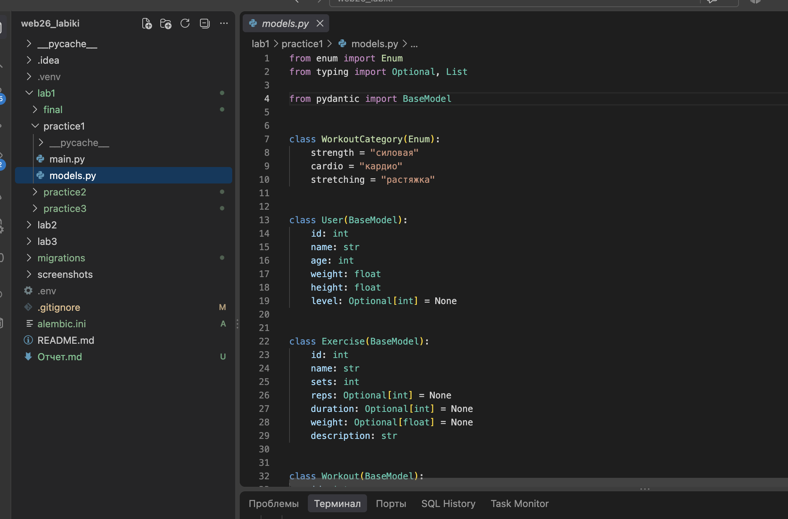
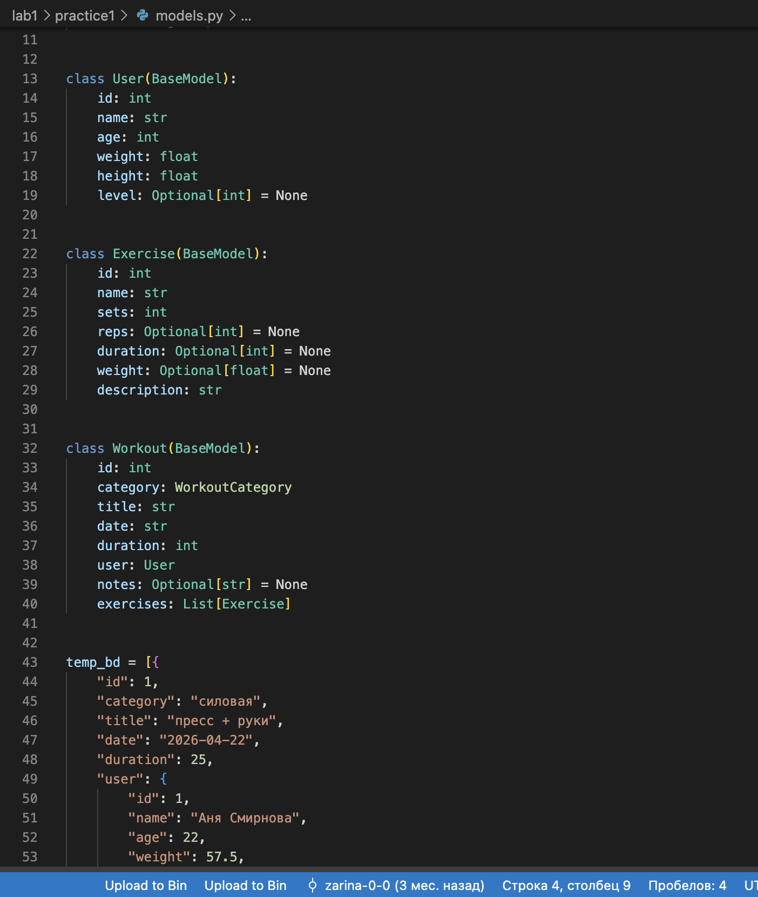
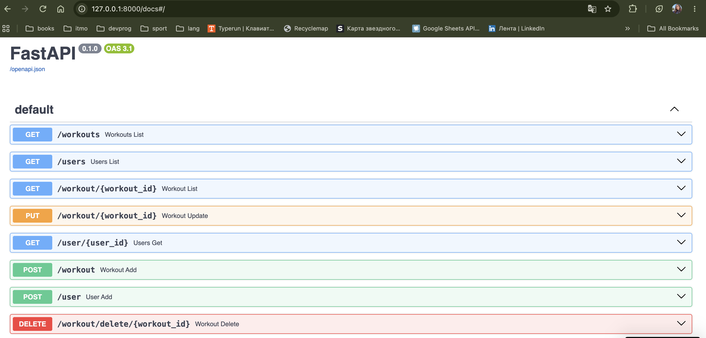
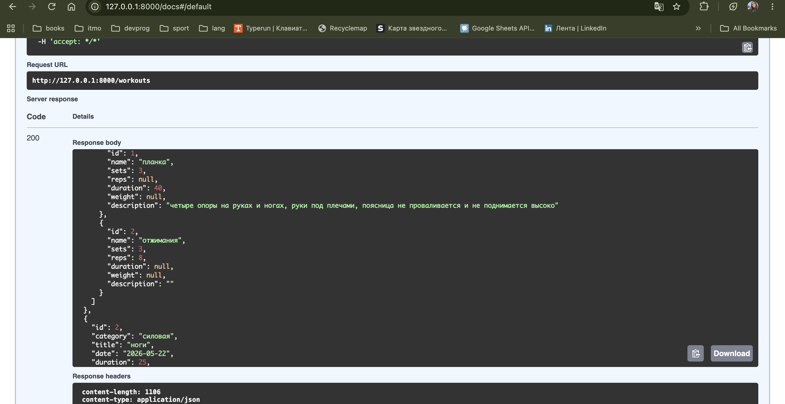

Практика 1.1
Практика 1.1. Основы FastAPI
Цель работы
Цель работы — познакомиться с фреймворком FastAPI, создать серверное приложение на Python, описать модели данных и реализовать основные HTTP-эндпоинты.
1. Создание проекта
Для выполнения практической работы был создан проект на Python с использованием виртуального окружения .venv.
Для первой практики была создана отдельная директория lab1/practice1, содержащая файлы main.py и models.py.
Рисунок 1 — Структура проекта

2. Создание моделей данных
В файле models.py были описаны Pydantic-модели предметной области: User, Exercise и Workout.
Модель Workout содержит вложенные объекты пользователя и список упражнений. Для категорий тренировок используется перечисление WorkoutCategory.
Также на данном этапе для хранения данных использовались временные структуры temp_bd и users_bd.
Рисунок 2 — Модели данных

3. Реализация API
В файле main.py было создано FastAPI-приложение:
app = FastAPI()
Для работы с данными были реализованы HTTP-эндпоинты:
| Метод | Эндпоинт | Назначение |
|---|---|---|
| GET | /workouts |
получение списка тренировок |
| GET | /users |
получение списка пользователей |
| GET | /workout/{workout_id} |
получение тренировки по идентификатору |
| GET | /user/{user_id} |
получение пользователя по идентификатору |
| POST | /workout |
добавление тренировки |
| POST | /user |
добавление пользователя |
| PUT | /workout/{workout_id} |
изменение тренировки |
| DELETE | /workout/delete/{workout_id} |
удаление тренировки |
Таким образом, были реализованы операции получения, создания, изменения и удаления данных.
4. Документация Swagger UI
После запуска приложения FastAPI автоматически сформировал интерактивную документацию Swagger UI.
В документации отображаются все реализованные эндпоинты, их HTTP-методы, параметры запросов и схемы данных.
Рисунок 3 — Swagger UI с реализованными эндпоинтами

5. Проверка получения данных
Для проверки работы API был выполнен запрос GET /workouts.
В результате сервер вернул список тренировок со статусом 200 OK. Ответ содержит информацию о тренировке, пользователе и входящих в неё упражнениях.Например, первая тренировка имеет категорию «силовая», название «пресс + руки», длительность 25 минут и содержит два упражнения: планку и отжимания. Таким образом, результат запроса демонстрирует также работу с вложенными объектами.
Рисунок 4 — Результат выполнения GET /workouts

Результат работы
В итоге при выполнении практической работы было создано серверное приложение на FastAPI. Были разработаны Pydantic-модели для пользователей, тренировок и упражнений, реализованы HTTP-эндпоинты для работы с данными и выполнена проверка API через Swagger UI. На данном этапе данные хранились во временных структурах Python. В следующих практических работах приложение будет дополнено подключением PostgreSQL, SQLModel и системой миграций Alembic.